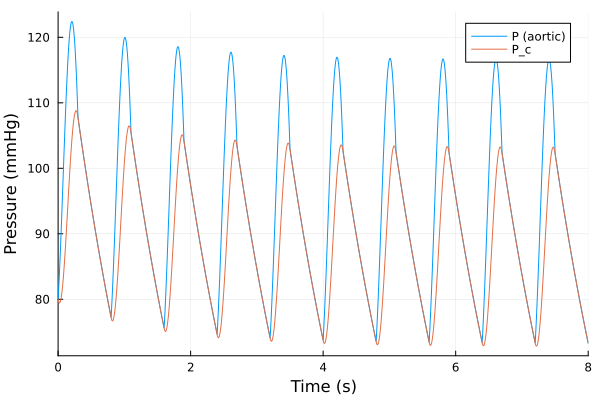
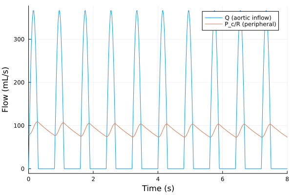
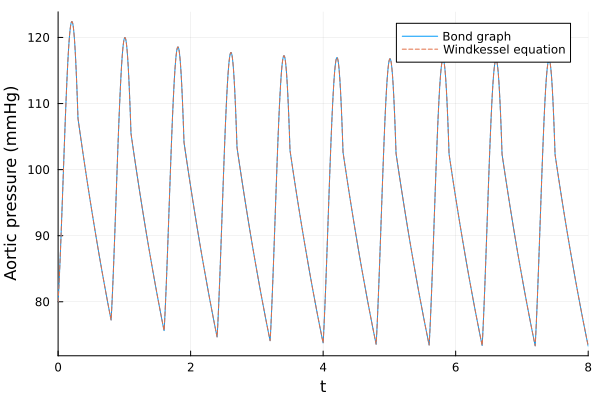

Arterial Windkessel
The source files for all examples can be found in /examples.
Introduction
The heart ejects blood into the aorta only during systole, yet blood flows through the tissues all the time. The large elastic arteries smooth the pulsatile ejection: they stretch and store blood while the heart ejects, and recoil and push it on while the aortic valve is closed. Weber compared this with the air chamber of a fire engine, the Windkessel, which turns the pump's strokes into a steady jet, and Frank turned the comparison into a quantitative model (Westerhof, Lankhaar & Westerhof 2009, §1, Fig. 1). The Windkessel is a lumped model: it describes the whole arterial tree by the relation between pressure and flow at its entrance, the aortic root, with a few parameters that have a physiological meaning.
Windkessel model
Frank's two-element Windkessel has two parameters (§1):
- the peripheral resistance $R$ of the small arteries and arterioles, where most of the resistance to flow is. With venous pressure neglected, it is mean aortic pressure over cardiac output, $R \approx P_{ao,mean}/\mathrm{CO}$;
- the total arterial compliance $C = \Delta V/\Delta P$, the volume the arteries store per unit of pressure, mostly in the large (conduit) arteries.
It predicts that in diastole, with the valve closed and no inflow, aortic pressure decays exponentially, $P(t) = P_{es}\,e^{-t/RC}$ from the end-systolic pressure $P_{es}$ (§2, Fig. 3). It describes systole poorly, though, and its input impedance falls to zero at high frequencies, where the measured one levels off at the characteristic impedance $Z_c$ of the proximal aorta. The three-element Windkessel adds $Z_c$ in series at the entrance, before the parallel $C$ and $R$ (§2, Figs. 4–5). $Z_c$ has the dimension of a resistance and is usually drawn as one, although it is not a resistance but a property of wave travel, $Z_c = \mathrm{PWV}\,\rho/A$ (pulse wave velocity, blood density, aortic area); in the systemic circulation it is about 5–7% of $R$ (§2, Fig. 5).
We model the three-element Windkessel as Westerhof et al. draw it (Fig. 5): the aortic inflow $Q(t)$ passes through $Z_c$ into the compliance $C$, which drains through the peripheral resistance $R$ into the veins, whose pressure we take as zero. Let $P$ be the aortic pressure at the entrance and $P_c$ the pressure across the compliance, after $Z_c$. The pressure drop across $Z_c$ is $Z_c Q$, and the inflow splits into the flow that fills the compliance, $C\,\dot{P}_c$, and the peripheral flow $P_c/R$. So
\[C\,\frac{dP_c}{dt} = Q(t) - \frac{P_c}{R}, \qquad P = P_c + Z_c\,Q(t).\]
With $Q = 0$ (diastole) $P = P_c$ decays with the time constant $RC$, as for the two-element model. At steady state the mean pressure is $(R + Z_c)$ times the mean flow (§2, Table 1).
The paper doesn't prescribe an inflow; in its examples the inflow is a measured aortic flow (§2, Fig. 6). We assume (our choice, not from the paper) the simplest standard pulsatile waveform: a half-sine during systole and no flow in diastole, with heart period $T$, systole length $T_s$ and stroke volume $SV$,
\[Q(t) = \begin{cases} Q_0 \sin(\pi\,\tau/T_s), & \tau < T_s, \\ 0, & T_s \le \tau < T, \end{cases} \qquad \tau = t \bmod T, \qquad Q_0 = \frac{\pi\,SV}{2\,T_s},\]
where $Q_0$ makes the area under one half-sine equal to $SV$.
See also N. Westerhof, J.-W. Lankhaar and B. E. Westerhof, The arterial Windkessel, Med Biol Eng Comput 47:131–141, 2009 (open access), Fig. 5 for the hydraulic and electrical forms of the two-, three- and four-element Windkessels.
Bond Graph Model
In the hydraulic domain pressure is the effort and volume flow the flow, so their product is power. The heart is a flow source, $Z_c$ and $R$ are resistances and the arterial compliance is a compliance, whose displacement is the stored volume $V = \int Q\,dt$. $Z_c$ carries the whole inflow, so it shares a 1-junction (common flow) with the source; $C$ and $R$ share the pressure $P_c$, so they sit on a 0-junction (common effort). The bond graph is drawn from the model below with bgplot, once it is built.
| Element | Stands for | Parameter |
|---|---|---|
Sf:Q | the aortic inflow from the heart | $Q(t)$ |
R:Zc | the characteristic impedance of the proximal aorta | $Z_c$ |
C:C | the total arterial compliance | $C$ |
R:Rp | the peripheral resistance | $R$ |
Preliminary Steps
In this example we first build and simulate the bond graph model over several heart beats, and check that the pressure settles into a periodic range of plausible values. Then we simulate the hand-derived equation as a plain ModelingToolkit model and compare the results.
We import the bond-graph toolkit to model the system and OrdinaryDiffEqTsit5 to solve the resulting ODE. We also import ModelingToolkit's independent variable t and derivative D, for the inflow and the reference model.
using BondGraphToolkit
using BondGraphToolkit.ModelingToolkit: t_nounits as t, D_nounits as D
using OrdinaryDiffEqTsit5
using PlotsSystem Element Definitions
We work in the units of clinical hemodynamics: pressure in mmHg, volume in mL, time in s, so resistances are in mmHg⋅s/mL and the compliance in mL/mmHg. Westerhof et al. (2009) give no numerical parameter values, only that $Z_c$ is about 5–7% of $R$ (§2). The values below are our assumption, chosen to give an adult at rest a plausible mean pressure and cardiac output.
Aortic inflow
A heart rate of 75 beats/min, a systole of 0.3 s and a stroke volume of 70 mL, that is a cardiac output of 5.25 L/min:
T = 0.8 # (s) Heart period
Ts = 0.3 # (s) Duration of systole (ejection)
SV = 70.0 # (mL) Stroke volume
Q0 = π * SV / (2Ts) # (mL/s) Peak inflow366.5191429188092The half-sine waveform, as a function of time. Called with the symbolic t it gives the flow source its law; we use the same function in the reference model.
inflow(t) = ifelse(mod(t, T) < Ts, Q0 * sin(π * mod(t, T) / Ts), 0.0)inflow (generic function with 1 method)Elements
The peripheral resistance gives a mean pressure of about $R\,SV/T \approx 88$ mmHg; $Z_c$ is 6% of it, in the middle of the paper's range; the compliance gives a diastolic decay time $RC = 1.5$ s, about twice the heart period:
@named Q = Sf(inflow(t)) # (mL/s) Aortic inflow
@named Zc = Resistance(R = 0.06) # (mmHg⋅s/mL) Characteristic impedance
@named Rp = Resistance(R = 1.0) # (mmHg⋅s/mL) Peripheral resistance
@named C = Compliance(C = 1.5, q = 120.0) # (mL/mmHg, mL) Total arterial compliance\[ \begin{align} \frac{\mathrm{d}q\left( t \right)}{\mathrm{d}t} &= f\left( t \right) \\ e\left( t \right) &= \mathtt{power.e}\left( t \right) \\ \mathtt{pout.e}\left( t \right) &= \mathtt{power.e}\left( t \right) \\ f\left( t \right) &= - \mathtt{pout.f}\left( t \right) + \mathtt{power.f}\left( t \right) \\ e\left( t \right) &= \frac{q\left( t \right)}{C} \end{align} \]
The compliance's state is the volume it stores above its unstressed volume. Its initial value, 120 mL, starts the pressure $P_c = V/C$ at 80 mmHg, a typical diastolic pressure.
Model Construction
The inflow, $Z_c$ and the bond to the rest of the tree share one flow, $Q$: a 1-junction. The source's bond points into the junction, away from the source (Q => :pout), and $Z_c$'s bond points out of the junction into it (Zc), Karnopp, Margolis & Rosenberg's usual orientations (2012, §3.1, pp. 39 and 49). The bond to the compliance and the periphery leaves the junction (:wk), following the blood downstream. The effort sum is therefore $P - Z_c Q - P_c = 0$: the source's effort, the pressure at the entrance, is $P = Z_c Q + P_c$.
@named j1 = Junction1(Q => :pout, Zc, :wk)\[ \begin{align} 0 &= \mathrm{connect}\left( Q_{+}pout, core_{+}p1 \right) \\ 0 &= \mathrm{connect}\left( Zc_{+}power, core_{+}p2 \right) \\ 0 &= \mathrm{connect}\left( wk, core_{+}p3 \right) \\ - \mathtt{core.p2.f}\left( t \right) &= \mathtt{core.p1.f}\left( t \right) \\ - \mathtt{core.p3.f}\left( t \right) &= \mathtt{core.p1.f}\left( t \right) \\ 0 &= \mathtt{core.p1.e}\left( t \right) - \mathtt{core.p2.e}\left( t \right) - \mathtt{core.p3.e}\left( t \right) \\ \mathtt{Q.e}\left( t \right) &= \mathtt{Q.power.e}\left( t \right) \\ \mathtt{Q.pout.e}\left( t \right) &= \mathtt{Q.power.e}\left( t \right) \\ \mathtt{Q.f}\left( t \right) &= - \mathtt{Q.pout.f}\left( t \right) + \mathtt{Q.power.f}\left( t \right) \\ \mathtt{Q.f}\left( t \right) &= ifelse\left( mod\left( t, 0.8 \right) < 0.3, 366.52 ~ \sin\left( 3.3333 ~ \pi ~ mod\left( t, 0.8 \right) \right), 0 \right) \\ \mathtt{Zc.e}\left( t \right) &= \mathtt{Zc.power.e}\left( t \right) \\ \mathtt{Zc.pout.e}\left( t \right) &= \mathtt{Zc.power.e}\left( t \right) \\ \mathtt{Zc.f}\left( t \right) &= - \mathtt{Zc.pout.f}\left( t \right) + \mathtt{Zc.power.f}\left( t \right) \\ \mathtt{Zc.e}\left( t \right) &= \mathtt{Zc.R} ~ \mathtt{Zc.f}\left( t \right) \end{align} \]
\[C\]
and $R$ share the pressure $P_c$: a 0-junction. The bond from the 1-junction enters it (:wk => :in), and the bonds to $C$ and $R$ point out of it into the elements (C, Rp), again the usual orientations. The flow balance is $Q - \dot{V} - P_c/R = 0$, the volume balance of the arteries. The veins are the pressure reference, so $R$'s bond ends there with no element.
@named j0 = Junction0(:wk => :in, C, Rp)\[ \begin{align} 0 &= \mathrm{connect}\left( wk, core_{+}p1 \right) \\ 0 &= \mathrm{connect}\left( C_{+}power, core_{+}p2 \right) \\ 0 &= \mathrm{connect}\left( Rp_{+}power, core_{+}p3 \right) \\ \mathtt{core.p2.e}\left( t \right) &= \mathtt{core.p1.e}\left( t \right) \\ \mathtt{core.p3.e}\left( t \right) &= \mathtt{core.p1.e}\left( t \right) \\ 0 &= \mathtt{core.p1.f}\left( t \right) + \mathtt{core.p2.f}\left( t \right) + \mathtt{core.p3.f}\left( t \right) \\ \frac{\mathrm{d}\mathtt{C.q}\left( t \right)}{\mathrm{d}t} &= \mathtt{C.f}\left( t \right) \\ \mathtt{C.e}\left( t \right) &= \mathtt{C.power.e}\left( t \right) \\ \mathtt{C.pout.e}\left( t \right) &= \mathtt{C.power.e}\left( t \right) \\ \mathtt{C.f}\left( t \right) &= - \mathtt{C.pout.f}\left( t \right) + \mathtt{C.power.f}\left( t \right) \\ \mathtt{C.e}\left( t \right) &= \frac{\mathtt{C.q}\left( t \right)}{\mathtt{C.C}} \\ \mathtt{Rp.e}\left( t \right) &= \mathtt{Rp.power.e}\left( t \right) \\ \mathtt{Rp.pout.e}\left( t \right) &= \mathtt{Rp.power.e}\left( t \right) \\ \mathtt{Rp.f}\left( t \right) &= - \mathtt{Rp.pout.f}\left( t \right) + \mathtt{Rp.power.f}\left( t \right) \\ \mathtt{Rp.e}\left( t \right) &= \mathtt{Rp.R} ~ \mathtt{Rp.f}\left( t \right) \end{align} \]
The two free ports wk are the two ends of one bond, joined with connect:
@named windkessel = System([connect(j1.wk, j0.wk)], t; systems = [j1, j0])\[ \begin{align} 0 &= \mathrm{connect}\left( j1_{+}wk, j0_{+}wk \right) \\ 0 &= \mathrm{connect}\left( Q_{+}pout, core_{+}p1 \right) \\ 0 &= \mathrm{connect}\left( Zc_{+}power, core_{+}p2 \right) \\ 0 &= \mathrm{connect}\left( wk, core_{+}p3 \right) \\ - \mathtt{j1.core.p2.f}\left( t \right) &= \mathtt{j1.core.p1.f}\left( t \right) \\ - \mathtt{j1.core.p3.f}\left( t \right) &= \mathtt{j1.core.p1.f}\left( t \right) \\ 0 &= \mathtt{j1.core.p1.e}\left( t \right) - \mathtt{j1.core.p2.e}\left( t \right) - \mathtt{j1.core.p3.e}\left( t \right) \\ \mathtt{j1.Q.e}\left( t \right) &= \mathtt{j1.Q.power.e}\left( t \right) \\ \mathtt{j1.Q.pout.e}\left( t \right) &= \mathtt{j1.Q.power.e}\left( t \right) \\ \mathtt{j1.Q.f}\left( t \right) &= - \mathtt{j1.Q.pout.f}\left( t \right) + \mathtt{j1.Q.power.f}\left( t \right) \\ \mathtt{j1.Q.f}\left( t \right) &= ifelse\left( mod\left( t, 0.8 \right) < 0.3, 366.52 ~ \sin\left( 3.3333 ~ \pi ~ mod\left( t, 0.8 \right) \right), 0 \right) \\ \mathtt{j1.Zc.e}\left( t \right) &= \mathtt{j1.Zc.power.e}\left( t \right) \\ \mathtt{j1.Zc.pout.e}\left( t \right) &= \mathtt{j1.Zc.power.e}\left( t \right) \\ \mathtt{j1.Zc.f}\left( t \right) &= - \mathtt{j1.Zc.pout.f}\left( t \right) + \mathtt{j1.Zc.power.f}\left( t \right) \\ \mathtt{j1.Zc.e}\left( t \right) &= \mathtt{j1.Zc.R} ~ \mathtt{j1.Zc.f}\left( t \right) \\ 0 &= \mathrm{connect}\left( wk, core_{+}p1 \right) \\ 0 &= \mathrm{connect}\left( C_{+}power, core_{+}p2 \right) \\ 0 &= \mathrm{connect}\left( Rp_{+}power, core_{+}p3 \right) \\ \mathtt{j0.core.p2.e}\left( t \right) &= \mathtt{j0.core.p1.e}\left( t \right) \\ \mathtt{j0.core.p3.e}\left( t \right) &= \mathtt{j0.core.p1.e}\left( t \right) \\ 0 &= \mathtt{j0.core.p1.f}\left( t \right) + \mathtt{j0.core.p2.f}\left( t \right) + \mathtt{j0.core.p3.f}\left( t \right) \\ \frac{\mathrm{d}\mathtt{j0.C.q}\left( t \right)}{\mathrm{d}t} &= \mathtt{j0.C.f}\left( t \right) \\ \mathtt{j0.C.e}\left( t \right) &= \mathtt{j0.C.power.e}\left( t \right) \\ \mathtt{j0.C.pout.e}\left( t \right) &= \mathtt{j0.C.power.e}\left( t \right) \\ \mathtt{j0.C.f}\left( t \right) &= - \mathtt{j0.C.pout.f}\left( t \right) + \mathtt{j0.C.power.f}\left( t \right) \\ \mathtt{j0.C.e}\left( t \right) &= \frac{\mathtt{j0.C.q}\left( t \right)}{\mathtt{j0.C.C}} \\ \mathtt{j0.Rp.e}\left( t \right) &= \mathtt{j0.Rp.power.e}\left( t \right) \\ \mathtt{j0.Rp.pout.e}\left( t \right) &= \mathtt{j0.Rp.power.e}\left( t \right) \\ \mathtt{j0.Rp.f}\left( t \right) &= - \mathtt{j0.Rp.pout.f}\left( t \right) + \mathtt{j0.Rp.power.f}\left( t \right) \\ \mathtt{j0.Rp.e}\left( t \right) &= \mathtt{j0.Rp.R} ~ \mathtt{j0.Rp.f}\left( t \right) \end{align} \]
The library draws the bond graph from the model, in the order of Westerhof et al.'s Fig. 5: source, $Z_c$, then $C$ and $R$:
bgplot(windkessel)
-->
<!-- Title: BondGraph Pages: 1 -->
<svg width="353pt" height="123pt"
viewBox="0.00 0.00 353.00 123.00" xmlns="http://www.w3.org/2000/svg" xmlns:xlink="http://www.w3.org/1999/xlink">
<g id="graph0" class="graph" transform="scale(1 1) rotate(0) translate(4 119)">
<title>BondGraph</title>
<polygon fill="white" stroke="none" points="-4,4 -4,-119 349,-119 349,4 -4,4"/>
<!-- j1 -->
<g id="node1" class="node">
<title>j1</title>
<text xml:space="preserve" text-anchor="middle" x="124" y="-13.32" font-family="Times,serif" font-size="14.00">1</text>
</g>
<!-- j0 -->
<g id="node4" class="node">
<title>j0</title>
<text xml:space="preserve" text-anchor="middle" x="221" y="-13.32" font-family="Times,serif" font-size="14.00">0</text>
</g>
<!-- j1&%2345;>j0 -->
<g id="edge5" class="edge">
<title>j1&%2345;>j0</title>
<path fill="none" stroke="black" d="M150.96,-18C161.12,-18 172.94,-18 183.91,-18"/>
<polygon fill="black" stroke="black" points="193.87,-18 183.87,-22.5 189.07,-18 183.87,-18 183.87,-18 193.87,-18"/>
</g>
<!-- j1₊Q -->
<g id="node2" class="node">
<title>j1₊Q</title>
<text xml:space="preserve" text-anchor="middle" x="27" y="-13.32" font-family="Times,serif" font-size="14.00">Sf:Q</text>
</g>
<!-- j1₊Q&%2345;>j1 -->
<g id="edge1" class="edge">
<title>j1₊Q&%2345;>j1</title>
<path fill="none" stroke="black" d="M53.96,-18C64.12,-18 75.94,-18 86.91,-18"/>
<polygon fill="black" stroke="black" points="96.87,-18 86.87,-22.5 92.07,-18 86.87,-18 86.87,-18 96.87,-18"/>
</g>
<!-- j1₊Zc -->
<g id="node3" class="node">
<title>j1₊Zc</title>
<text xml:space="preserve" text-anchor="middle" x="124" y="-92.33" font-family="Times,serif" font-size="14.00">R:Zc</text>
</g>
<!-- j1₊Zc&%2345;>j1 -->
<g id="edge2" class="edge">
<title>j1₊Zc&%2345;>j1</title>
<path fill="none" stroke="black" d="M124,-69.16C124,-58.07 124,-46.98 124,-35.9"/>
<polygon fill="black" stroke="black" points="124,-79.13 119.5,-69.13 124,-74.34 124,-69.13 124,-69.13 124,-79.13"/>
</g>
<!-- j0₊C -->
<g id="node5" class="node">
<title>j0₊C</title>
<text xml:space="preserve" text-anchor="middle" x="318" y="-13.32" font-family="Times,serif" font-size="14.00">C:C</text>
</g>
<!-- j0&%2345;>j0₊C -->
<g id="edge3" class="edge">
<title>j0&%2345;>j0₊C</title>
<path fill="none" stroke="black" d="M247.96,-18C258.12,-18 269.94,-18 280.91,-18"/>
<polygon fill="black" stroke="black" points="290.87,-18 280.87,-22.5 286.07,-18 280.87,-18 280.87,-18 290.87,-18"/>
</g>
<!-- j0₊Rp -->
<g id="node6" class="node">
<title>j0₊Rp</title>
<text xml:space="preserve" text-anchor="middle" x="221" y="-92.33" font-family="Times,serif" font-size="14.00">R:Rp</text>
</g>
<!-- j0₊Rp&%2345;>j0 -->
<g id="edge4" class="edge">
<title>j0₊Rp&%2345;>j0</title>
<path fill="none" stroke="black" d="M221,-69.16C221,-58.07 221,-46.98 221,-35.9"/>
<polygon fill="black" stroke="black" points="221,-79.13 216.5,-69.13 221,-74.34 221,-69.13 221,-69.13 221,-79.13"/>
</g>
</g>
</svg>
)
Analysing the model
mtkcompile reduces the model to its one state: the volume stored in the compliance.
sys = mtkcompile(windkessel)\[ \begin{align} \frac{\mathrm{d}\mathtt{j0.C.q}\left( t \right)}{\mathrm{d}t} &= - \mathtt{j0.Rp.f}\left( t \right) + \mathtt{j1.Q.f}\left( t \right) \end{align} \]
Print system states
unknowns(sys)1-element Vector{SymbolicUtils.BasicSymbolicImpl.var"typeof(BasicSymbolicImpl)"{SymReal}}:
j0₊C₊q(t)Print system parameters
parameters(sys)3-element Vector{SymbolicUtils.BasicSymbolicImpl.var"typeof(BasicSymbolicImpl)"{SymReal}}:
j1₊Zc₊R
j0₊C₊C
j0₊Rp₊RPrint the system's equations in terms of the states
full_equations(sys)\[ \begin{align} \frac{\mathrm{d}\mathtt{j0.C.q}\left( t \right)}{\mathrm{d}t} &= ifelse\left( mod\left( t, 0.8 \right) < 0.3, 366.52 ~ \sin\left( 3.3333 ~ \pi ~ mod\left( t, 0.8 \right) \right), 0 \right) + \frac{ - \mathtt{j0.C.q}\left( t \right)}{\mathtt{j0.C.C} ~ \mathtt{j0.Rp.R}} \end{align} \]
Generated equations against the hand derivation
bgequations returns the same equations with the names we choose. We rename the stored volume to $V$ and the parameters to the symbols of the introduction (inside a let, so the name C keeps pointing at the element):
let
@variables V(t)
@parameters C R
bgequations(windkessel; rename = Dict(j0.C.q => V, j0.C.C => C, j0.Rp.R => R))
end\[ \begin{align} \frac{\mathrm{d}V\left( t \right)}{\mathrm{d}t} &= ifelse\left( mod\left( t, 0.8 \right) < 0.3, 366.52 ~ \sin\left( 3.3333 ~ \pi ~ mod\left( t, 0.8 \right) \right), 0 \right) + \frac{ - V\left( t \right)}{C ~ R} \end{align} \]
The inflow appears as its expression in $t$. With $V = C\,P_c$, the equation reads $C\,\dot{P}_c = Q(t) - P_c/R$, the hand-derived equation. $Z_c$ doesn't appear, and renaming it would be an error: it carries the source's flow, which is known, so it only sets the source's effort, the entrance pressure $P = P_c + Z_c\,Q$, an observed variable that bgequations (state equations only) doesn't list. We check it in the simulation below.
System Simulations
Bond graph model
Define the simulation time: ten heart beats.
tspan = (0.0, 10T)(0.0, 8.0)Generate an ODEProblem, with the initial volume given to the compliance:
prob = ODEProblem(sys, [], tspan)ODEProblem with uType Vector{Float64} and tType Float64. In-place: true
Initialization status: FULLY_DETERMINED
Non-trivial mass matrix: false
timespan: (0.0, 8.0)
u0: 1-element Vector{Float64}:
120.0Use solve to simulate the system. Tight tolerances let us compare it with the reference model at the end. The inflow's slope jumps at the start and end of each systole; tstops puts a solver step on each of these instants.
kinks = sort([(0:9) * T; (0:9) * T .+ Ts])
sol = solve(prob, Tsit5(), reltol = 1e-10, abstol = 1e-10, tstops = kinks)retcode: Success
Interpolation: specialized 4th order "free" interpolation
t: 510-element Vector{Float64}:
0.0
0.0019901506771301787
0.005394165415389557
0.009492893064091398
0.014741030239407819
0.021193327833589147
0.0355716345328352
0.04210830554506091
0.051725549779142954
0.05962103361402406
⋮
7.690074756897334
7.729832394029656
7.771253680226817
7.8143200092526
7.858612932873799
7.903981138143846
7.95019427067042
7.99711186304317
8.0
u: 510-element Vector{Vector{Float64}}:
[120.0]
[119.84849082052146]
[119.62499984076982]
[119.41539893422417]
[119.24131905106599]
[119.17086036769378]
[119.569150247332]
[119.99484235744394]
[120.8850964341036]
[121.83909383629806]
⋮
[135.18184400322815]
[131.64590407812744]
[128.06034299174578]
[124.43589658498837]
[120.81519701470201]
[117.21579181444253]
[113.65958168916146]
[110.15951597529894]
[109.94761619313704]The entrance (aortic) pressure is the source's effort, and the pressure after $Z_c$ the compliance's:
plot(sol, idxs = [j1.Q.e, j0.C.e], labels = ["P (aortic)" "P_c"],
xlabel = "Time (s)", ylabel = "Pressure (mmHg)")
The inflow, the source's flow, against the peripheral outflow, $R$'s flow. The compliance turns the pulsatile inflow into a nearly steady outflow:
plot(sol, idxs = [j1.Q.f, j0.Rp.f], labels = ["Q (aortic inflow)" "P_c/R (peripheral)"],
xlabel = "Time (s)", ylabel = "Flow (mL/s)")
Periodic pressure range
After a few beats the pressure repeats from beat to beat. The diastolic (minimum) and systolic (maximum) aortic pressure of each beat, on a fine grid:
beats = [range(k * T, (k + 1) * T, length = 801) for k in 0:9]
P_range = [extrema(sol(b; idxs = j1.Q.e).u) for b in beats]10-element Vector{Tuple{Float64, Float64}}:
(77.21643384934865, 122.40731394419143)
(75.58346529002979, 119.9841690778259)
(74.62549045785195, 118.56308582572677)
(74.06349814438092, 117.72970711767594)
(73.73380747842064, 117.24080864173797)
(73.54039569531518, 116.9539982036641)
(73.42693140394292, 116.78574194451278)
(73.36036800635361, 116.68703504662346)
(73.32131884079114, 116.62912901878062)
(73.29841079542469, 116.59515866727827)The last beat's diastolic and systolic pressures, about 73/117 mmHg, and their change from the beat before, a few hundredths of a mmHg: the start-up transient decays with the time constant $RC = 1.5$ s, by a factor $e^{-T/RC} \approx 0.6$ per beat, and after ten beats is almost gone:
P_range[end], P_range[end] .- P_range[end-1]((73.29841079542469, 116.59515866727827), (-0.022908045366449414, -0.033970351502347285))The mean aortic pressure over the last beat and the predicted $(R + Z_c)\,SV/T$:
let b = beats[end]
sum(sol(b[1:end-1]; idxs = j1.Q.e).u) / (length(b) - 1), (1.0 + 0.06) * SV / T
end(92.79291892411933, 92.75)Windkessel model
The reference model is the hand-derived equation, in the pressure $P_c$, with the same parameter values and initial pressure:
Rᵥ, Zcᵥ, Cᵥ = 1.0, 0.06, 1.5 # (mmHg⋅s/mL, mmHg⋅s/mL, mL/mmHg)
@variables Pc(t) = 80.0 # (mmHg) Pressure across the compliance
@variables P(t) # (mmHg) Aortic pressure at the entrance
@named ref = System([Cᵥ * D(Pc) ~ inflow(t) - Pc / Rᵥ, P ~ Pc + Zcᵥ * inflow(t)], t)\[ \begin{align} 1.5 ~ \frac{\mathrm{d}\mathtt{Pc}\left( t \right)}{\mathrm{d}t} &= - \mathtt{Pc}\left( t \right) + ifelse\left( mod\left( t, 0.8 \right) < 0.3, 366.52 ~ \sin\left( 3.3333 ~ \pi ~ mod\left( t, 0.8 \right) \right), 0 \right) \\ P\left( t \right) &= \mathtt{Pc}\left( t \right) + 0.06 ~ ifelse\left( mod\left( t, 0.8 \right) < 0.3, 366.52 ~ \sin\left( 3.3333 ~ \pi ~ mod\left( t, 0.8 \right) \right), 0 \right) \end{align} \]
We compile and solve it as the bond graph model, with the same time span, tolerances and stops.
ref_sol = solve(ODEProblem(mtkcompile(ref), [], tspan), Tsit5(), reltol = 1e-10, abstol = 1e-10,
tstops = kinks);Compare models
The aortic pressure of the bond graph (solid) against the Windkessel equation (dashed):
plot(sol, idxs = j1.Q.e, label = "Bond graph", xlabel = "Time (s)", ylabel = "Aortic pressure (mmHg)")
plot!(ref_sol, idxs = P, label = "Windkessel equation", linestyle = :dash)
On a common time grid, the largest difference between the two models, in the aortic pressure $P$ and the pressure after $Z_c$, $P_c$:
tgrid = range(tspan..., length = 1001)
(maximum(abs, sol(tgrid; idxs = j1.Q.e).u - ref_sol(tgrid; idxs = P).u),
maximum(abs, sol(tgrid; idxs = j0.C.e).u - ref_sol(tgrid; idxs = Pc).u))(7.459937023668317e-8, 7.459937023668317e-8)The difference is about $10^{-9}$ of the pressure, the solver's tolerance. The bond graph model reproduces the three-element Windkessel, and its aortic pressure settles into a periodic beat with plausible systolic and diastolic values.
This page was generated using Literate.jl.